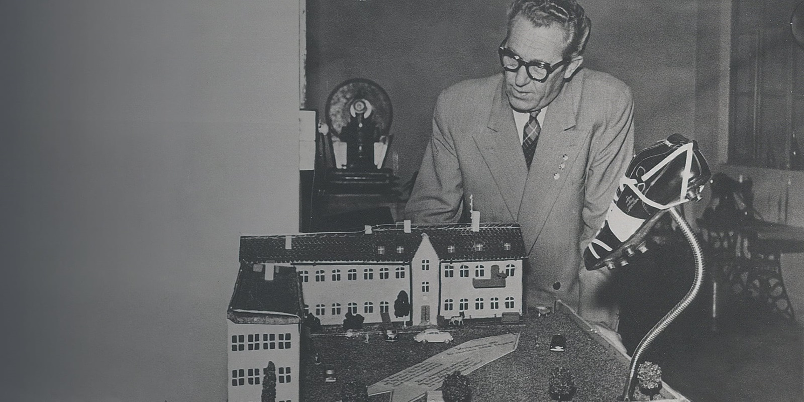

PUMA
Un primer paso en una larga historia impulsada por la velocidad y el rendimiento: los hermanos Rudolf y Adolf Dassler fundaron la empresa "Gebrüder Dassler Schuhfabrik" (Fábrica de zapatos Dassler Brothers) en su ciudad natal, Herzogenaurach, Alemania. Sin que ellos lo sepan, colocan la primera piedra de la capital mundial del calzado deportivo.
Después del gran éxito de la primera bota de fútbol de PUMA, la ATOM, en 1950, el lanzamiento de la SUPER ATOM de PUMA en 1952 crea un gran revuelo. Rudolf Dassler colabora con expertos, como el seleccionador nacional de Alemania Occidental, Sepp Herberger, para desarrollar la primera bota del mundo con tacos de rosca. Para PUMA, marca el comienzo de nuestra herencia futbolística.
El mundialmente famoso "Logotipo No. 1" toma forma: El puma da su salto a través de la esquina superior derecha de la palabra logo. Solo se han realizado cambios menores a lo largo de los años: el ojo y el hocico desaparecieron y las orejas son más pronunciadas en la actualidad.
NIKE

ADIDAS